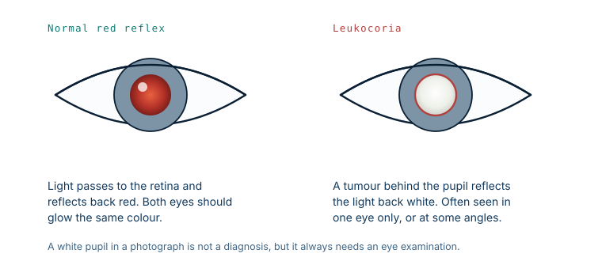

Retinoblastoma: the cancer a photograph can catch
More than 95 in 100 children survive retinoblastoma where it is found early. In low-income countries the figure is closer to 40. The tumour is the same tumour. Almost the entire difference is how long it went unseen.
What the tumour is
Retinoblastoma is a cancer of the retina, the light-sensitive layer at the back of the eye. It arises from immature retinal cells while they are still dividing, which is why it is a disease of very young children and why it essentially stops appearing once the retina has finished developing. It is the most common eye cancer of childhood, though still rare in absolute terms.
Confined to the eye, it is one of the most treatable cancers in medicine. Once it grows out of the eye, it becomes one of the least.
The first sign is usually visible
Shine a light into a healthy eye and it comes back red, because the light reaches the retina and reflects off its blood supply. This is the red-eye effect familiar from flash photography, and it is the same phenomenon a doctor uses in the red reflex test.
A tumour sitting between the pupil and the retina interrupts that. Light strikes the pale tumour surface and reflects back white instead of red. The medical term is leukocoria, and it is what a parent sees in a photograph as one pupil glowing white while the other glows red.

Where retinoblastoma is recognised early, leukocoria is by far the most common reason a child is referred, accounting for roughly six in ten referrals. A squint accounts for about one in ten. A bulging eye accounts for well under one in ten.
Where it is found late, the signs are different
Those proportions invert in settings without early detection. There, the most common presenting sign is not a white pupil at all. It is an enlarged or protruding eye — the tumour has already grown out of the globe and into the orbit.
The numbers behind that shift are stark. In high-income countries the median age at diagnosis is around 14 months, and roughly 98% of children are diagnosed while the tumour is still inside the eye. In low-income countries the median age is around 30 months, close to half of children already have disease outside the eye, and nearly one in five has metastatic disease at the point of diagnosis.
Sixteen months of difference in median age is the whole story.
Why the delay is fatal
Inside the eye, the tumour is contained by the sclera, the tough white outer coat. That containment is what makes early retinoblastoma curable: treatment aims at a closed compartment.
Once the tumour breaches the sclera, or travels along the optic nerve, that boundary is gone. It reaches the orbit, and from there the meninges, the brain, and the bloodstream. Historically only about 9% of children with orbital extension survived beyond two years. Modern combined treatment — chemotherapy, surgery and radiotherapy together — has raised five-year survival for orbital disease to above 50%, which is a genuine improvement and still far below what early detection achieves. Where the disease has spread to the central nervous system or beyond, the outlook remains very poor.
Left untreated entirely, retinoblastoma is uniformly fatal, and quickly: published follow-up data show roughly a third of children dying within a year of diagnosis and essentially none surviving four years.
The obstacles are not only medical
Late presentation is often described as a lack of awareness, which is part of it but not all of it. The documented barriers include distance from any centre able to treat a child, the cost of travel and care, a shortage of paediatric ophthalmologists, and the absence of routine infant eye screening.
Two further factors account for a large share of deaths and are rarely discussed. The first is abandonment of treatment: families who begin a long, expensive course of therapy far from home and cannot sustain it. The second is refusal of enucleation — removing the affected eye. When a tumour fills the globe, taking the eye is often the intervention that saves the child's life, and it is understandably one of the hardest things to consent to for a child who may otherwise seem well.
What this means for a parent
If a photograph shows one pupil white and the other red, that needs an eye examination, not a wait-and-see. The same applies to a new squint in a young child, or any pupil that looks cloudy in ordinary light.
Most white pupils in photographs turn out to be nothing — the flash angle, the camera, a reflection off the optic disc. The test to rule out the serious cause is quick, non-invasive and available from any ophthalmologist. The asymmetry is what matters: the risk of checking is nothing, and the cost of not checking is measured in years.
What this case teaches
Retinoblastoma is the clearest example in oncology of a disease whose outcome is set by the calendar rather than the biology. The tumour behaves identically everywhere. What differs is whether it is found while it is still inside a closed compartment. That is why the useful intervention here is not a better drug but a faster path from a parent noticing something in a photograph to a child sitting in front of an ophthalmologist.